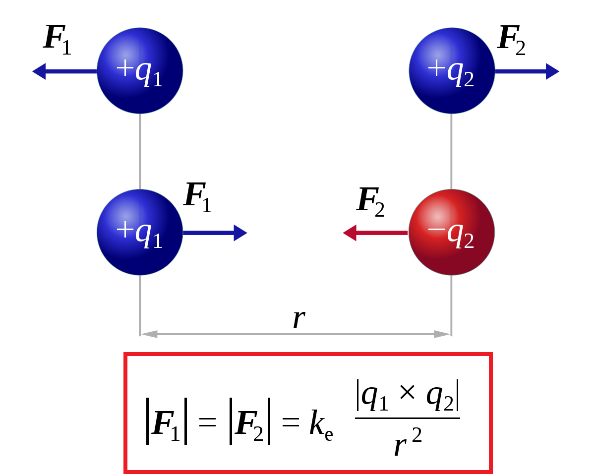

4
l'expression de la force de coulomb :

F2/1 et F1/2 : s'exprime en (N)
q1 et q2 :charges electrique s'exprime en coulomb (c)
r :c'est une distance elle s'exprime en metre (M)
k : constante = 9.10²
5
Principe de superposition :
F1 = F2/1 + F3/1 + F4/1 ...... + Fn/1